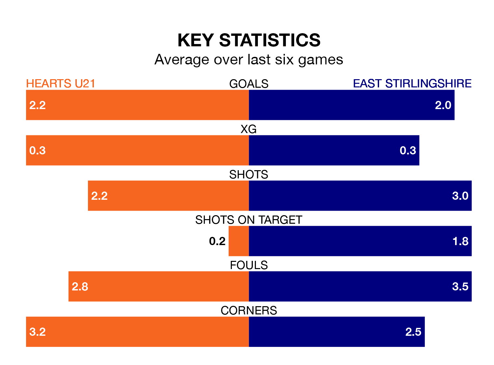

Hearts U21 host East Stirlingshire at the Ainslie Park Stadium on late Friday on the back of six consecutive wins in the Lowland Football League.
It means Hearts U21 have picked up the maximum 18 points from their last six games, and they face a Shire side who have also won their last three matches, and collected 15 points from the last possible 18.
With 82 goals in 31 games so far this season, Hearts U21 are the league's second-highest scorers with 2.6 goals per game. And they are conceding fewer than average, letting in 36 goals at a rate of 1.2 per game.
East Stirlingshire, meanwhile, are below average scorers, with 1.5 goals per game, compared to a league average of 1.7. They have conceded 1.8 goals per game.
Hearts are second in the table after 31 games, of which they have won 19 and drawn six, earning 63 points.
The Shire are 12 places behind the home team in 14th, with 10 wins and five draws putting them on 35 points.
In the last three years, Hearts U21 and East Stirlingshire have played each other on three occasions. Hearts U21 won two of them and they drew once.
Their last meeting was on September 29, when they played out a 1-1 draw.
Hearts U21's last match was on March 23, a 3-0 win against Gretna 2008.
East Stirlingshire beat Cowdenbeath 2-1 last time out, also on March 23.
Updated: 12:16 (UTC), 25/03/24